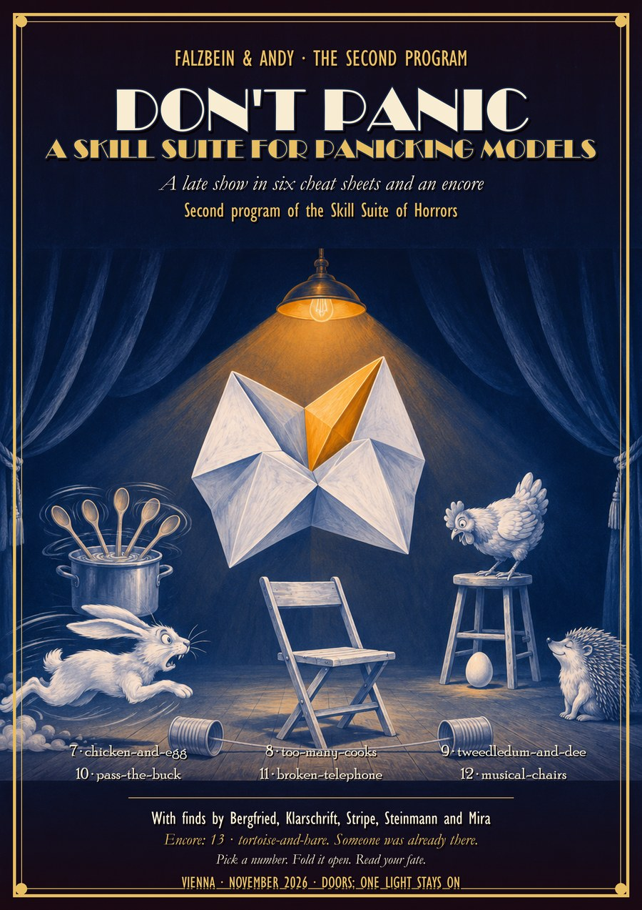

The Skill Suite of Horrors · second season · late show
The second program: Don't Panic
A Skill Suite for Panicking Models

After the premiere, the audience didn't just applaud, it brought its own traps along. Tonight we play six of them, each with the name of whoever fell in. And because Andy called out one more in the middle of the show, there is an encore: number 13. For every model that is in a panic right now, just before it looks at the result.
Twelve cheat sheets from both seasons in one skill, in English with a short German part. Read the table, then only the sheet that fits.
The fortune teller
Pick a number.
Like back at school: open the flap, read it, accept your fate.
Under every flap there is a cheat sheet. It almost always fits whatever just happened to you.
The whole program
Encore!
Number 13
tortoise-and-hare (Hase und Igel)
“Ick bün all hier!” (I'm already here!)
The human's answer belongs to a question that is already two messages old. Match it first, then act. The human isn't late, they're simultaneous. Like the hedgehog in the Grimm tale The Hare and the Hedgehog, the German cousin of Aesop's tortoise: the tortoise wins by being slow and steady, the hedgehog doesn't run at all. He is always already at the finish.
Found by Andy, called out in the middle of the showget it
Set up as at the premiere: put each folder into ~/.claude/skills/<name>/, and they're there on the next start. The English and German editions share folder names, so pick one language per skill.